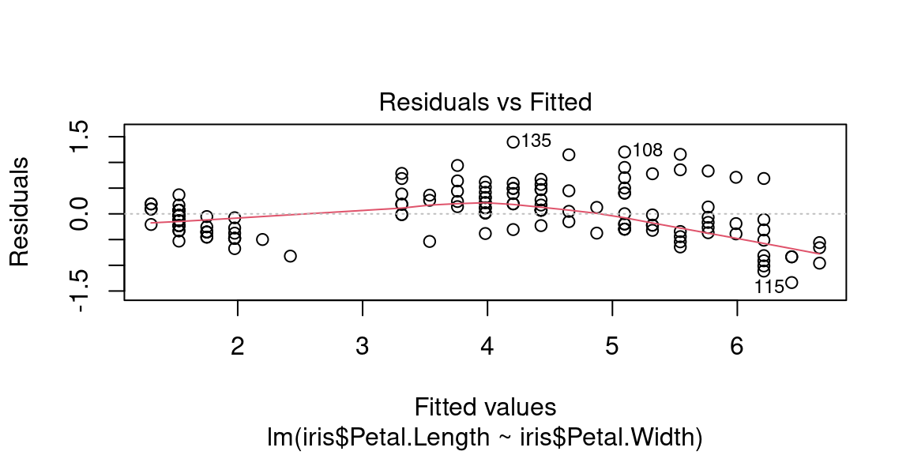

Chapitre 9 Analyse Bivariée
L’analyse bivariée , comme son nom l’indique, a pour objectif d’analyser le lien qui peut exister entre deux variables.
En guise de rappel sur les types de variables (cf section 1.5) , donnons des exemples:
Pour deux variables quantitatives , on pourrait analyser le lien entre :
- le nombre d’habitants et nombre de lignes de bus des départements français
- le nombre de lignes de bus en Isère en 1998 et en 2018
Pour deux variables qualitatives, on pourrait analyser le lien entre :
- la couleur des yeux et le fait de porter des lunettes
- les catégories de séries télé et la plate-forme où ils sont disponibles
Enfin, pour une variable quantitative et une variable qualitative :
- le lien entre la taille et la couleur des yeux,
- le lien entre le nombre d’aces d’un joueur et le côté du cours de tennis qu’il occupe
9.0.1 Analyse bivariée, mais sans la localisation
L’analyse bivariée que nous allons aborder dans ce chapitre concerne des variables traditionnelles, i.e. pas des variables de localisation . Si elles proviennent de données spatiales, ce sera :
- soit des individus restreints spatialement (sélection spatiale)
- soit des variables “géographiques” (e.g. lieu de résidence) renseignées pour les individus
La localisation en tant que variable n’interviendra pas dans ce cours.
9.0.2 Ressources pour l’analyse des localisation et des distances
Il existe des outils statistiques pour analyser le lien qui existe entre des variables localisées dans l’espace et leur localisation elle-même. Ces techniques ne sont pas au programme de ce cours, je les mentionne pour les curieux.
On peut ainsi mesurer l’ auto-corrélation spatiale , qui indique si les valeurs proches sont regroupées ou au contraire disséminées dans l’espace, à l’aide de l’indice de Moran global, et identifier des clusters de valeurs plus fortes ou plus faibles que la normale à l’aide de l’indice de Moran local.
On peut également effectuer des régressions qui tiennent compte de la localisation des observations dans l’espace, qu’on appelle GWR pour Geographicaly Weighted Regression (plus de détails sur wikipedia et la fiche de l’INSEE)
Enfin , si on désire prendre en compte les distances dans les flux entre unités spatiales (par exemple pour expliquer les déplacements domicile-travail dans une région) on peut se tourner vers les modèles gravitaires
Nous donnerons à la fin de ce cours quelques éléments à ce sujet dans la section 16
9.1 Corrélation n’implique pas causalité
Nous allons voir comment quantifier l’intensité du lien statistique qui peut exister entre deux variables.
Cette erreur d’amalgame entre corrélation et causalité est très courante, très tentante, justement à cause du fait que l’amalgame «marche» dans de nombreux cas empiriques.
De nombreux contre-exemples sont heureusement disponibles pour finir de se convaincre que la corrélation n’implique pas la causalité:

© TylerVigen http://tylervigen.com/spurious-correlations \(\leftarrow\) D’autres exemples sont disponibles à cette adresse.
9.1.1 Diverses formes de dépendances
Ce qu’on appelle lien ou liaison ou encore dépendance entre les variables expriment le fait que les valeurs de deux variables n’évoluent pas indépendamment mais au contraire présentent une certaine forme une certaine régularité.
Ces «régularités» peuvent être de plusieurs formes, en voici quelques unes :

Cette matrice de graphes, de gauche à droite et de haut en bas montre :
- une dépendance linéaire positive
- une dépendance linéaire négative
- une dépendance non-linéaire , peut-être exponentielle
- une dépendance périodique, sinusoïdale
- une absence de dépendance, les deux variables sont indépendantes
- une absence de dépendance, la variable de l’axe des \(y\) est constante
En pratique les formes sont beaucoup moins régulières que ces exemples très «mathématiques» : les données peuvent être bruitées, incomplètes, contenir des outliers, etc.
9.1.2 Les étapes de l’analyse bivariée
On peut résumer la démarche ‘mentale’ à adopter devant un jeu de données par cette séquence:
- Tracer le nuage de points
- Existe-t-il une relation ?
- Est-elle de forme linéaire ? De quel sens ?
- Si la liaison est de forme linéaire \(\rightarrow\) faire une régression
- Si la liaison est non linéaire, est-elle monotone ? De forme connue ?\(\rightarrow\) proposer un modèle, i.e. une équation qui décrive la forme de la dépendance entre les deux variables.
- (5bis)Réaliser un modèle LOESS avec prudence (uniquement descriptif , aucun pouvoir de généralisation) cf le blog de Lise Vaudor [http://perso.ens-lyon.fr/lise.vaudor/regression-loess/]
Voici un arbre de décision plus précis :

9.2 Régression linéaire
9.2.1 Avant toute chose
Vous devriez commencer à avoir l’habitude de ce mantra, encore plus valable dans le cas d’une analyse bivariée :
Toujours en premier: Regarder l’aspect des données avec des graphiques
Si le nuage de point n’est pas allongé, si vous “voyez” clairement qu’une droite ne le résulera pas, ou alors très mal, il n’est pas nécessaire d’entreprendre une rregression linéaire, qui sera de toute façon décevante!
La regression linéaire ne concerne que les variables quantitatives.
9.2.2 Principe et Vocabulaire
9.2.2.1 Droite de régression
Si la forme du nuage de points s’y prête, c’est-à-dire bien allongée, rectiligne, on peut entreprendre une régression linéaire (aussi appelé ajustement linéaire).
Cela consiste à trouver la droite qui passe «au mieux» dans le nuage de points de deux variables quantitatives \(V_1\) et \(V_2\), celle qui résume le nuage de points d’une façon satisfaisante.
«au mieux» est ici employé au sens des moindres carrés, c’est-à-dire que parmi toutes les droites qui peuvent passer au milieu du nuage de points, on va choisir celle pour laquelle l’erreur commise est la plus faible.
On cherche la droite (en fait on cherche les deux coefficients \(a\) et \(b\) de son équation \(y=ax+b\)) qui minimise la somme des carrés des écarts, d’où le nom d’estimation MCO (Moindres Carrés Ordinaires) ou OLS (Ordinary Least Squares in english).
Si le nuage de points n’est pas amorphe, sans forme, et que les deux variables ne sont pas totalement indépendantes, ou constantes, alors cette droite est unique.
9.2.2.2 Modèle linéaire
En réalisant une régression linéaire, on cherche à expliquer une variable à partir d’une autre. «Expliquer» signifie ici «avoir un modèle pour calculer une valeur de la variable à partir d’une autre».
Dans le cas d’une régression linéaire, le modèle est l’équation de la droite ajustée, de la forme \(y=ax +b\), celle qui minimise la somme des écarts au carré.
On cherche donc les valeurs de \(a\) et de \(b\) (les coefficients du modèles linéaire) qui nous permettrait de calculer la valeur d’une variable (la variable dite expliquée) à partir d’une autre (la variable dite explicative ), que l’on peut écrire naïvement de cette façon :
\[Valeurs\ de\ la\ variable\ expliquée = modèle(Valeurs\ de\ la\ variable\ explicative)\]
\[Valeurs\ prédites\ de\ V_2 = modèle(V_1)\]
Ici, notre modèle est linaire, donc:
\[Valeurs\ prédites\ de\ V_2 = a\times V_1 + b\]
Variable explicative: C’est celle qui est utilisée par le modèle pour calculer les valeurs de la variable expliquée. Dans notre exemple , c’est \(V_1\). Par convention , on la met sur l’axe des \(x\) dans les graphes.
Variable expliquée : C’est la variable pour laquelle le modèle propose des valeurs: dans notre exemple c’est \(V_2\). Par convention on la met sur l’axe des \(y\) dans les graphes.
9.2.2.3 Estimation, Prédiction, Résidu
On peut utiliser le modèle, pour estimer (=calculer, prédire) les valeurs de \(V_2\), avec les valeurs de \(V_1\) et à l’aide de l’équation de droite. On note souvent les valeurs prédites \(\hat{V_2}\).
L’écart entre \(\hat{V_2}\) et \(V_2\) est appelé résidu.
Ainsi pour toutes les observations du jeu de données, on a :
\[V_2 = prediction(V_1) + residu\] \[V_2 = \hat{V_2} + residu\]
9.2.2.4 L’erreur commise par le modèle
L’erreur commise par la droite, c’est la somme des écarts entre les points du nuage et la droite, les résidus, ces écarts sont élevés au carré avant d’être sommés pour que les erreurs positives et négatives ne se compensent pas. On appelle parfois cette somme la SSE (Sum of Square Erros in english) ou la RSS (Residuals Sum of Squares in english).
On peut l’écrire avec des notations différentes, mais la signification est toujours la même :
\[SSE = \sum_i (prediction_i - observation_i)^2\] \[SSE = \sum_i ( modele(x_i)- x_i)^2\] \[SSE = \sum_i ( ax_i + b - x_i)^2\] \[SSE = \sum_i ( \hat{y_i}- x_i)^2\]
On peut noter qu’il ne s’agit pas de la distance entre les points et la droite (leur projeté orthogonal), mais bien l’écart en ordonnée qui intervient dans ce calcul.
Quasiment toutes les statistiques inférentielles reposent sur ce genre d’équation : on cherche un modèle d’une variable, à partir d’autres variables explicatives, et parmi les modèles possibles, on essaye de réduire l’erreur et de trouver le «bon» modèle: celui qui produise des résidus avec de nombreuses propriétés souhaitables : valeurs faibles, identiquement distribuées, de distributions proches de la gaussienne, sans auto-corrélation temporelle ni spatiale, etc.
Nous reviendrons dans la section bonus @ref{residuslm} sur la façon de qualifier les erreurs commises par un modèle linaire avec R.
9.2.3 Interpréter la droite de régression
L’objectif de la régression linéaire est trouver le meilleur modèle linéaire entre deux variables. Ce modèle est l’équation d’une droite, qu’on appelle droite de régression et qui permet de visualiser:
- l’intensité de la dépendance, suivant que les points sont proches de la droite ou non
- la forme de la dépendance, suivant que le nuage soit bien de forme linéaire
- le sens de la dépendance : nulle, positive ou négative

Dans cet exemple, le nuage de point est assez allongé, on constate une dépendance linaire négative. Les points sont relativement proches de la droite.
9.2.4 Utiliser un modèle linéaire
L’équation de la droite est un modèle linéaire de la relation statistique qui lie \(V_1\) et \(V_2\);
Ici le modèle est : \(\hat{V_2}=aV_1+b\)
Si la régression linéaire est réussie, alors pour un individu \(i\) dont on connait \(V1_i\), on infère la valeur \(V_{2i}\) par le modèle : \(\hat{V_{2i}} = aV_{1i} +b\)
On dit aussi que \(V_1\) explique \(V_2\) , ou que le modèle prédit \(V_2\) à partir de \(V_1\) (on note les valeurs prédites \(\hat{V_2}\)).
Il est intéressant d’avoir un (bon) modèle de la relation entre \(V_2\) et \(V_1\), car en l’absence d’observations supplémentaires de \(V_2\) , on peut estimer les valeurs qu’elles prendraient si on dispose d’observations supplémentaires de \(V_1\).
Imaginez que des observations de \(V_2\) soient particulièrement coûteuses à recueillir, et les observations de \(V_1\) particulièrement peu coûteuses, par exemple la production de salive d’un tigre adulte en colère (\(V_2\)) et la largeur de ses empreintes (\(V_1\)). En cas de bonne qualité de régressions, le.la zoologiste sera ravi.e de mesurer les largeurs d’empreintes.
9.2.5 Évaluer la qualité d’une régression linaire : le \(R^2\)
En pratique, pour considérer qu’une régression linéaire est de bonne qualité, i.e. que le modèle linéaire qui lie les deux variables décrit (explique, prédit, ..) bien les données, il faut réunir deux critères :
- des coefficients avec des p-values associées faibles (e.g. <0.05) qu’on peut grossièrement traduire par “on a peu de chances de se tromper”
- un \(R^2\) élevé, qu’on peut traduire par “le modèle prédit bien les observations”
D’autres critères sont donnés en bonus à la section 9.3.3.
On commence par le \(R^2\).
9.2.5.1 le \(R^2\)
Le coefficient de détermination linéaire , noté \(R^2\) est une valeur qui décrit la qualité de prédiction de la régression, c’est-à-dire à quel point la droite de régression estime correctement les valeurs de la variable expliquée.
Il est défini par : \[R^2 = 1 - \frac{\sum_{i=1}^{n} (y_i - \hat{y})^2}{\sum_{i=1}^{n} (y_i - \bar{y})^2}\]
- \(R^2 \in [0;1]\)
- Plus le \(R^2\) est proche de 1, meilleure est la qualité.
Pour avoir l’intuition de l’interprétation de cette formule, on peut remarquer que la fraction est un ratio entre la somme des résidus au carrés (écart entre valeurs observées \(y_i\) et valeur prédite \(\hat{y_i}\)) et la variance (cf. section 5.2) de la variable expliquée (\(y\)).
Le dénominateur de la fraction est constant , il vaut \(var(y)\) Alors, intuitivement , pour un mauvais modèle, qui prédit mal les observations de \(y\), la somme des résidus au carré sera importante, donc la fraction également, et la valeur de \(R^2\) sera petite, proche de 0. De la même manière, pour un bon modèle, qui prédit bien les valeurs de \(y\), les résidus seront faibles, donc leur somme quadratique également, ainsi que la valeur de la fraction, ce qui donnera un \(R^2\) proche de 1.
Mentalement , on peut réécrire la formule ainsi :
\[R^2 \approx 1- \frac{résidus^2}{variance\ de\ y}\]
\[R^2 \approx 1- (erreur\ commise\ normalisée)\]
9.2.5.2 Propriétés et interprétation additionnelles du \(R^2\)
Le \(R^2\) peut s’écrire de plusieurs façons, notamment ainsi :
\[R^2 = \frac{\sum_{i=1}^{n} (\hat{y_i} -\bar{y} )^2}{\sum_{i=1}^{n} (y_i - \bar{y})^2}\]
Cette expression est intéressante pour nous car on reconnait encore une fois une fraction de variances (cf. section 5.2) :
- au dénominateur , c’est la variance de \(y\) , la variable expliquée
- au numérateur , c’est la variance de \(\hat{y}\), la variable prédite par le modèle
(les termes en \(\frac{1}{n}\) des variances au numérateur et dénominateur se simplifient )
On peut donc voir le \(R^2\) comme un ratio de variances : celles des estimations et celles des observations. En faisant une regression, on cherche à «capturer» la variance de la variable expliquée à l’aide de la variance de la variable estimée par le modèle, d’où une valeur de \(R^2\) proche de 1 lorsque la variance des estimations est proche de la variance des observations
9.2.5.3 Exemples avec différentes valeurs de \(R^2\)
Voici des exemples de régression linéaire de différentes qualités avec la valeurs correspondante de \(R^2\), on donne aussi la valeur de la p-value, que nous aborderons juste après.

Cette première régression est de bonne qualité: le \(R^2\) est proche de 1, la droite décrit bien les données : peu de point s’en écartent significativement.
Cette deuxième régression est de moindre qualité. Certes, le nuages de points à une forme suffisamment “allongée” pour qu’on entreprenne une régression linéaire, mais celle-ci est de qualité intermédiaire : beaucoup de points sont éloignés de la droite, le nuage est assez dispersé, ce qui augmente les erreurs et donc amoindrit le score du \(R^2\).

Avec ce dernier exemple volontairement exagéré, la qualité de la régression est mauvaise.
Certes la forme du nuage de points est linéaire, mais la bande est tellement large que les erreurs seront très grandes, même si la droite de régression passe bien au milieu. La variance de la variable 2 est telle qu’elle n’est pas suffisamment “capturée” par la droite. On notera que les p-value sont très faibles, ce qui on va le voir, indique qu’on est à peu près certains de l’équation de la droite, c’est bien celle-ci qui passe “au mieux” dans le nuage de points. Le problème, c’est que ce nuage de points est tout simplement «mal» décrit par une droite, vu sa forme !
9.2.6 Évaluer la qualité d’une régression linaire : la p-value
9.2.6.1 la p-value et l’hypothèse nulle
La p-value est la seconde quantité qui nous renseigne sur la qualité d’une régression linéaire. Le \(R^2\) mesurait la qualité de prédiction du modèle linéaire, la p-value est plutôt associée avec la notion de confiance qu’on peut placer dans les coefficients du modèle linéaire que l’on obtient.
La façon d’interpréter correctement une p-value fait l’objet de nombreux débats, on en propose une ici, mais il y en a de nombreuses autres.
Approximation grossière :
la p-value est le pourcentage de chances de se tromper en rejetant l’hypothèse nulle, c’est-à-dire se tromper en considérant que les deux séries ne sont pas indépendantes et qu’il existe une relation entre les deux (ici, linéaire car nous testons un modèle linéaire).
Sur la base de cette approximation, on peut d’ores et déjà dire que plus cette p-value est petite , mieux c’est.
La p-value est associée à la notion d’hypothèses nulle. Ici , l’hypothèse nulle \(H_0\) est “les deux variables sont indépendantes”.
- rejeter \(H_0\) c’est considérer que les deux variables ne sont pas indépendantes
- (par abus de langage) conserver \(H_0\) c’est considérer qu’elles sont indépendantes
En statistique, on raisonne avec des hypothèses, qu’on rejette ou qu’on conserve, suivant la valeur de tests statistiques.
Par exemple, lorsqu’on teste si deux variables sont linéairement liées, on formule en fait une hypothèse alternative , \(H_1\), qui est «les deux variables sont linéairement liées».
Quand on rejette \(H_0\) et qu’on a formulé une hypothèse alternative , on accepte de facto \(H_1\).
\(H_0\), est l’hypothèse à formuler dans le cas le plus général possible, quand on ne sait rien du tout sur les données. Dans ce cas là, étant donné deux variables, on pose l’hypothèse qu’elles sont indépendantes, tout simplement parce qu’il n’y a aucune raison qu’elles soient liées.
9.2.6.2 Approximation moins grossière à propos de la p-value
La p-value peut s’interpréter comme «la probabilité d’avoir un résultat au moins aussi marqué étant donné l’hypothèse nulle»
Imaginez que vous ayez un jeu de données \(D_{ini}\) constitué de 2 variables quantitatives pour 500 individus. Le nuage de points est suffisamment allongé pour que vous entrepreniez une régression linéaire. Vous obtenez une certaine valeur pour vos coefficients \(a_{D_ini}\) et \(b_{D_ini}\) de régression linéaire. Vous pouvez même faire une test de corrélation de Pearson, et obtenir une valeur de corrélation élevée, bref , vous rejetez \(H_0\) pour \(D_{ini}\)
Maintenant imaginez qu’on génère une infinité de jeu de données \(\Gamma\) à 2 variables et à 500 individus sachant \(H_0\), donc avec des variables indépendantes, des variables pour lesquelles on sait qu’il n’y a aucun lien.
Parmi cette infinité de jeu de données, il y en a une proportion qui, par hasard, par chance, présente des données qui ont la même forme que notre jeu de données, ou une forme suffisamment proche, qui donnerait des résultats aussi remarquables c’est à dire égaux ou encore plus marqués , de régression, la même droite, la même corrélation.
Trions l’infinité de jeu de données \(\Gamma\) selon ce critère de résultats, d’un côté les jeux de données qui indique les même résultats que notre régression sur \(D_{ini}\), qu’on va noter \(\Gamma_{corrélés}\), de l’autre les jeux de données pour lesquels on ne peut pas conclure aux même résultats: il n’y a pas de corrélation entre les deux variables, la forme du nuage de points n’est pas assez linéaire pour qu’un analyste décide d’en faire une régression linéaire. On note ces jeux \(\Gamma_{indépendants}\).
Rappelons qu’on a généré cette infinité de jeu de données sous l’hypothèse \(H_0\). On s’est donc trompés, pour tous les jeux de données étiquetés \(\Gamma_{corrélés}\), en obtenant des résultats de corrélation et de régression linéaire similaires (ou plus marqués encore) à ceux obtenus sur \(D_{ini}\).
On ne s’est pas trompés pour tous les jeux de \(\Gamma_{indépendants}\)
La p-value c’est la proportion \[\frac{\Gamma_{corrélés}}{\Gamma}=\frac{\Gamma_{corrélés}}{\Gamma_{indépendants}+\Gamma_{corrélés}} \].
C’est la proportion de fois où on s’est trompés en affirmant à propos de \(\Gamma_{corrélés}\) les résultats obtenus sur \(D_{ini}\) alors qu’on avait des jeux de données où \(H_0\) était vraie par construction.
Évidemment cette proportion est très faible pour des cas où le lien entre les deux variables est marquée, mais comme on raisonne à l’infini elle ne sera jamais nulle !
9.2.6.3 Ce qu’il faut retenir de la p-value
- plus elle est petite, mieux c’est
- en sciences expérimentales, le seuil de significativité est bas (~5%), en sciences sociales , il est plus haut.
- elle s’interprète comme un pourcentage de chances de se tromper en première approximation
- il faut plutôt le voir comme la probabilité d’obtenir par chance les même résultats de régression linéaire, pour une jeu de données de variables indépendantes de même taille.
9.3 Effectuer une régression linéaire avec R
9.3.1 La commande lm
La régression linéaire entre deux variables x et y s’obtient avec la fonction lm(y ~ x).
Le premier argument est sous une forme particulière d’expression en R :une formule.
Elle s’écrit Variable expliquée ~ Variable explicative dans notre cas, puisque nous faisons une régression univariée , c’est-à-dire qu’on essaye d’expliquer une variable à l’aide d’une seule autre variable.
##
## Call:
## lm(formula = iris$Petal.Length ~ iris$Petal.Width)
##
## Coefficients:
## (Intercept) iris$Petal.Width
## 1.084 2.2309.3.2 Format des résultats
La fonction lm renvoie une objet complexe, qui contient beaucoup d’informations.
Elles sont heureusement résumées sous une forme lisible en console par la fonction summary()
##
## Call:
## lm(formula = iris$Petal.Length ~ iris$Petal.Width)
##
## Residuals:
## Min 1Q Median 3Q Max
## -1.33542 -0.30347 -0.02955 0.25776 1.39453
##
## Coefficients:
## Estimate Std. Error t value Pr(>|t|)
## (Intercept) 1.08356 0.07297 14.85 <2e-16 ***
## iris$Petal.Width 2.22994 0.05140 43.39 <2e-16 ***
## ---
## Signif. codes: 0 '***' 0.001 '**' 0.01 '*' 0.05 '.' 0.1 ' ' 1
##
## Residual standard error: 0.4782 on 148 degrees of freedom
## Multiple R-squared: 0.9271, Adjusted R-squared: 0.9266
## F-statistic: 1882 on 1 and 148 DF, p-value: < 2.2e-16On y trouve dans l’ordre:
- la formule de la regression (section
Call) - les quartiles des résidus (section
Residuals) - les coefficients du modèle ajusté et leur p-value associée, ici sur un test de Student, notée
Pr(>|t|)(sectionCoefficients) - le \(R^2\), on pourra prendre la valeur étiquetée
Adjusted R-squared(dernière section)
9.3.3 Bonus: Critères de significativité du lien linéaire
Ces critères portent sur les résidus \(\epsilon_i\), i.e. l’écart entre valeur observée et valeur prédite de la variable \(y\) pour l’individu \(i\)
\[\epsilon_i= y_i - \hat{y_i}\]
Les résidus doivent:
- être indépendants : covariance nulle ou très faible \(cov(x_i, \epsilon_i) = 0\)
- être distribués selon un loi normale de moyenne nulle \(\epsilon \sim \mathscr{N}(0,\sigma_{\epsilon})\)
- être distribués de façon homogène (homoscédasticité), i.e. de variance constante \(var(\epsilon_i)=\sigma_{\epsilon}^2\) , indépendante de l’observation
On peut vérifier une partie de ces critères à l’aide des quartiles que donne R dans les résultats de régression.
9.3.3.1 Évaluation de l’indépendance des résidus avec R
On utilise les graphique de la fonction acf.
Si une barre exceptée la première dépasse la ligne en pointillés, on peut remettre en cause l’indépendance des résidus. Ici, c’est le cas. Cela ne veut pas pour autant dire que le modèle linéaire est à mettre à la poubelle, simplement qu’il y a une erreur systématique dans ses résidus, qui ne sont pas assez indépendants.

9.3.3.2 Les 4 graphiques résultats de la fonction lm
La fonction lm de R et ses résultats permettent de tracer 4 graphiques pour évaluer certains des critères de significativité.
Pour cela il suffit d’appeler la fonction plot sur l’objet résultat de la régression.
modele1 <- lm(iris$Petal.Length~ iris$Petal.Width)
par(mfrow=c(2,2)) # pour avoir une matrice de graphes
plot(modele1)
9.3.3.3 Évaluer l’homogénéité des résidus avec R
Le premier graphique sert à vérifier que le nuage de points est homogène c’est-à-dire qu’il n’y a pas de relation non-linéaire entre résidus et valeurs prédites.
Une éventuelle relation non-linéaire pourrait se retrouver dans les résidus, et c’est normal. C’est «normal» puisqu’un modèle linéaire ne va capturer que des structures, des tendances linéaires entre deux variables. En cas de structure trop marquée dans les résidus, il faut peut être proposer un modèle non-linéaire, plus délicat à ajuster mais qui capturera plus de variance et laissera des résidus moins marqués.
Ici on observe une légère structure parabolique:

9.3.3.4 Bonus: Évaluer la normalité de la distribution des résidus avec R
Le deuxième graphique “Q-Q plot” : pour vérifier l’hypothèse de normalité des résidus, les points doivent être proches de la bissectrice

9.3.3.5 Bonus: évaluer l’homoscédasticité des résidus
Le troisème graphique “Scale location” : si les résidus sont distribués de façon homogène suivant les valeurs “fittées”, alors la droite est plutôt horizontale et les points sont disposés de façon homogène autour.

Ici: légère pente mais les points sont distribués de façon relativement homogène autour de la droite.